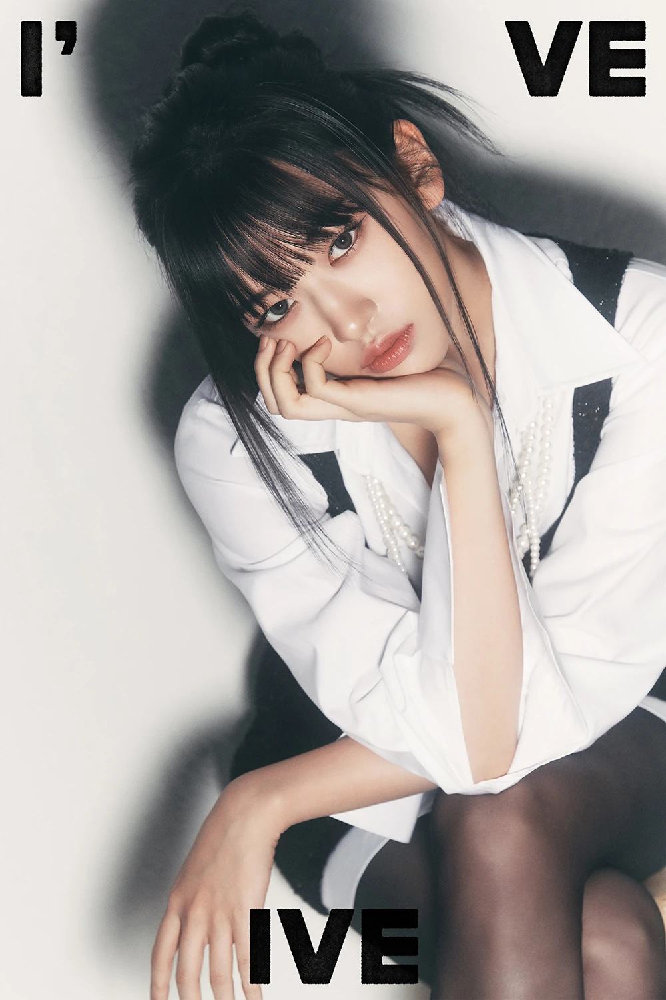
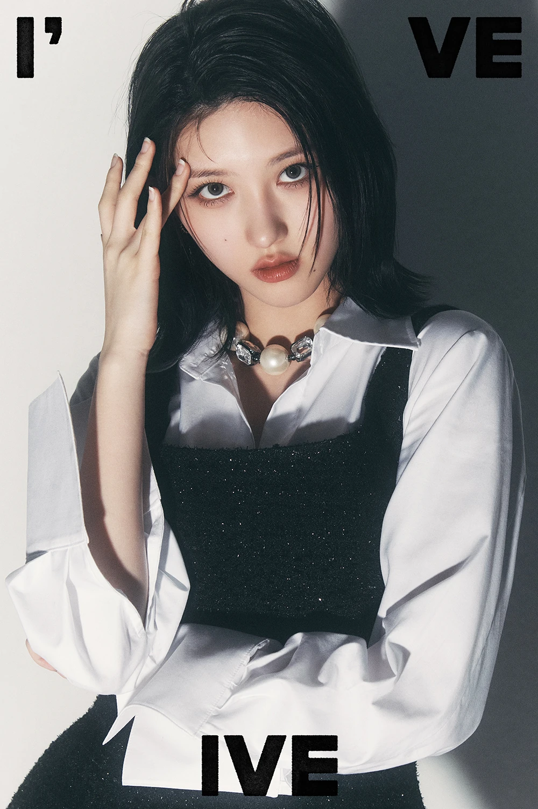
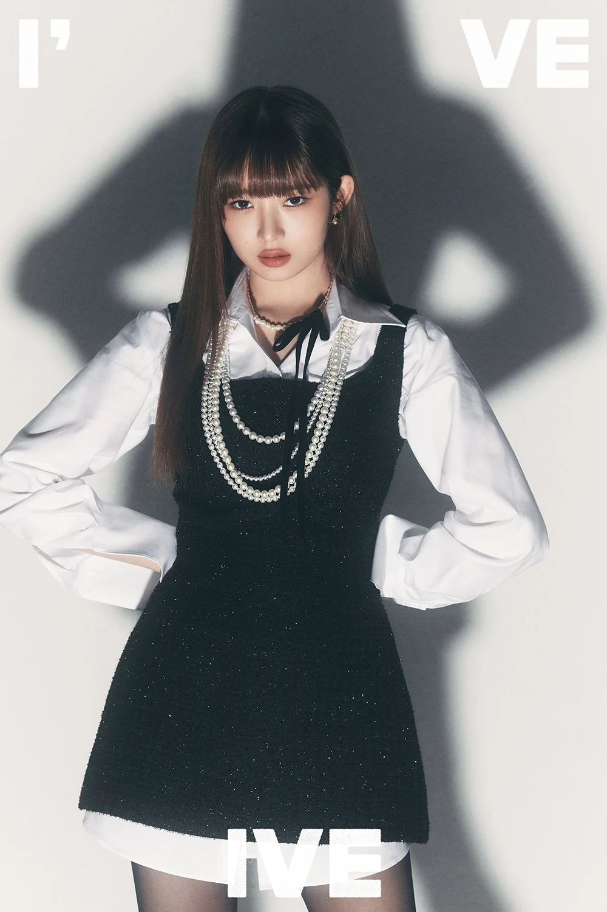
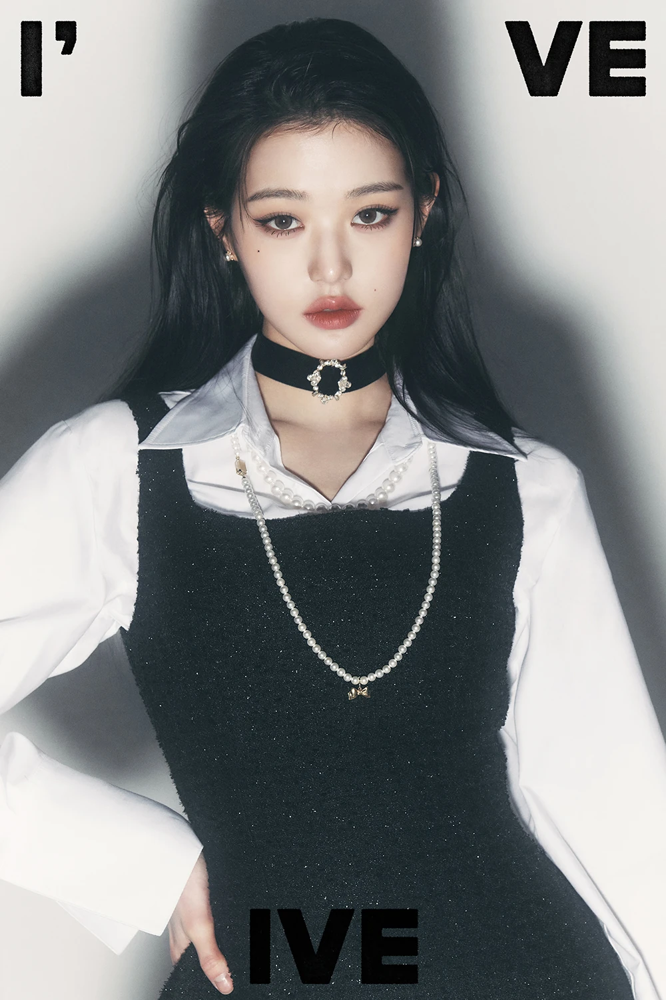
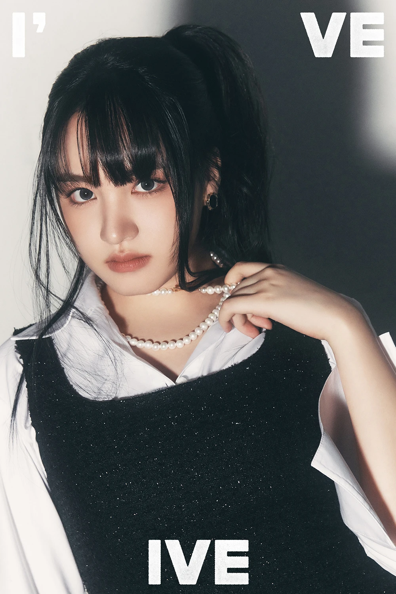
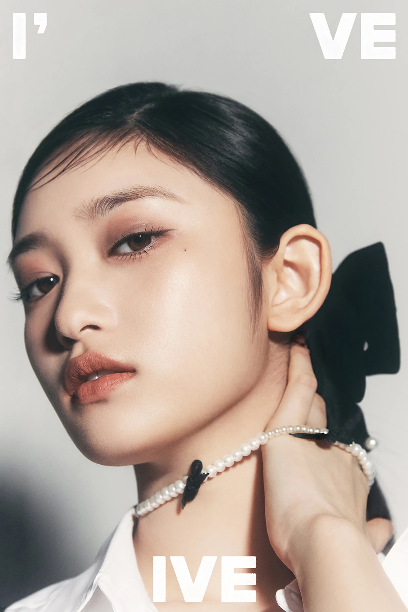

Miembros

Nombre: 유진 / Yu Jin
Nombre completo: 안유진 / An Yu Jin
Nombre en japonés: アン ユジン / An Yujin
Profesión: Cantante, Bailarina, Rapera, Modelo y MC.
Fecha de nacimiento: 01-Septiembre-2003
Lugar de nacimiento: Daejeon, Corea del Sur.
Estatura: 173 cm
Tipo de sangre: A
Signo zodiacal: Virgo
Signo zodiacal chino: Cabra
Familia: Padres y una hermana mayor
Agencia: Starship Entertainment

Nombre: 가을 / Ga Eul
Nombre completo: 김가을 / Kim Ga Eul
Nombre en japonés: キム·ガウル / Kimu Gauru
Profesión: Cantante, Rapera y Bailarina.
Fecha de nacimiento: 24-Septiembre-2002
Lugar de nacimiento: Bupyeong-gu, Incheon, Corea del Sur.
Estatura: 164 cm
Tipo de sangre: B
Signo zodiacal: Libra
Signo zodiacal chino: Caballo
Familia: Padres y un hermano mayor
Agencia: Starship Entertainment

Nombre: 레이 / レイ / Rei
Nombre completo (en coreano): 김레이 / Kim Rei
Nombre en japonés: 直井レイ(なおいれい) / Naoi Rei
Profesión: Cantante, Rapera y Bailarina.
Fecha de nacimiento: 03-Febrero-2004
Lugar de nacimiento: Anansi, Prefectura de Tokushima, Japón.
Estatura: 170 cm
Tipo de sangre: AB
Signo zodiacal: Acuario
Signo zodiacal chino: Mono
Agencia: Starship Entertainment

Nombre: 원영 / Won Young
Nombre completo: 장원영 / Jang Won Young
Nombre en inglés: Vicky Jang
Profesión: Cantante y Bailarina.
Fecha de nacimiento: 31-Agosto-2004
Lugar de nacimiento: Seúl, Corea del Sur.
Estatura: 173 cm
Tipo de sangre: O
Signo zodiacal: Virgo
Signo zodiacal chino: Mono
Familia: Padres y una hermana mayor
Agencia: Starship Entertainment

Nombre: 리즈 / Liz
Nombre completo: 김지원 / Kim Ji Won
Nombre en japonés: キム・ジウォン / Kimu Jiuon
Profesión: Cantante, Bailarina
Fecha de nacimiento: 21-Noviembre-2004
Lugar de nacimiento: Jeju-do, Corea del Sur.
Estatura: 171 cm
Tipo de sangre: B
Signo zodiacal: Escorpio
Signo zodiacal chino: Mono
Agencia: Starship Entertainment

Nombre: 이서 / Lee Seo
Nombre completo: 이현서 / Lee Hyun Seo
Profesión: Cantante, Bailarina
Fecha de nacimiento: 21-Febrero-2007
Lugar de nacimiento: Gapyeong-gun, Gyeonggi, Corea del Sur.
Estatura: 166 cm
Tipo de sangre: O
Signo zodiacal: Piscis
Signo zodiacal chino: Cerdo
Agencia: Starship Entertainment